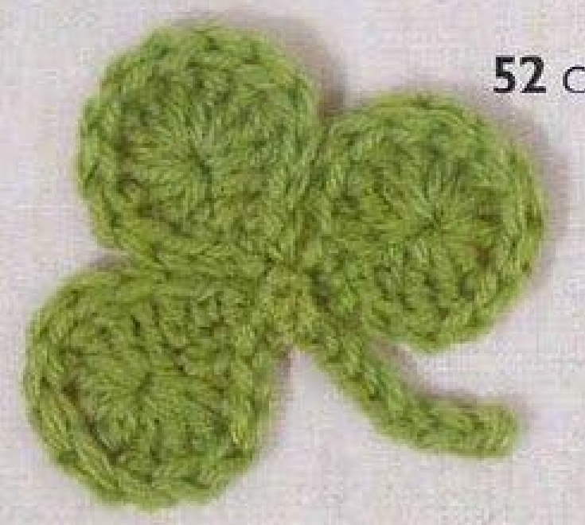
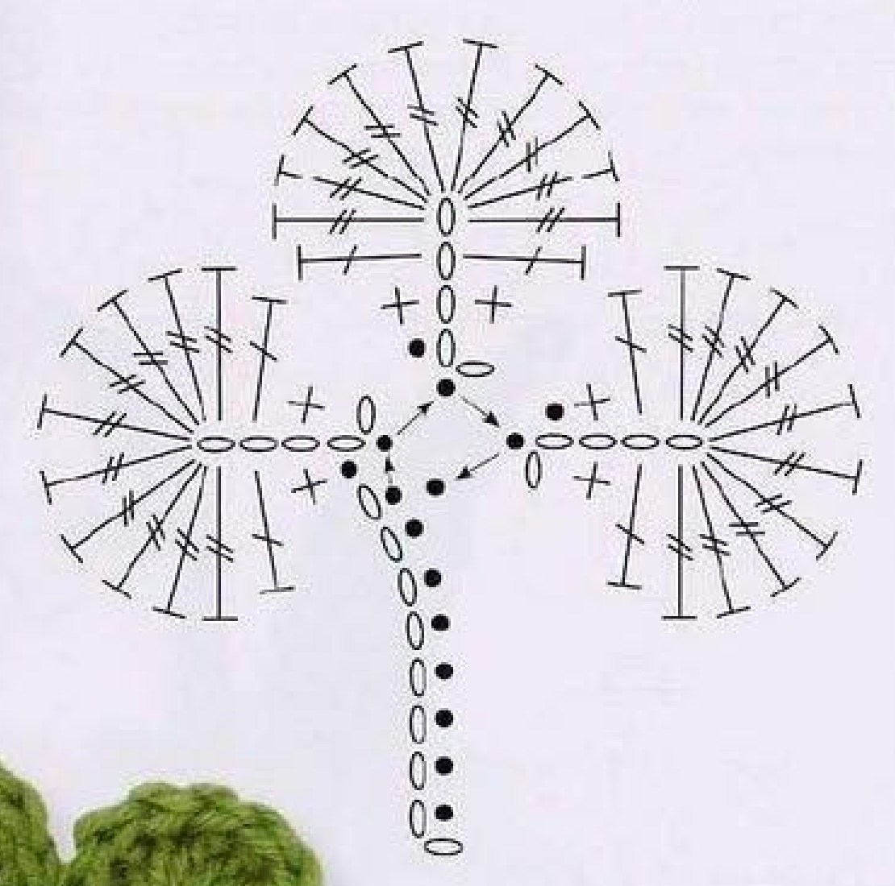
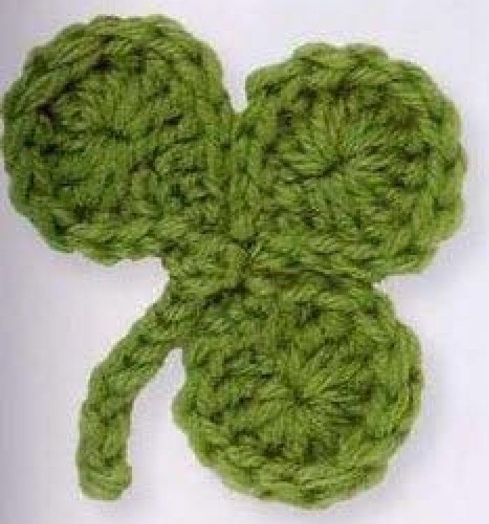

A crochet Clover Leaf in this source has three rounded lobes joined at the center and a short worked-back stem. Each lobe is made around a small chain foundation, with a fan of tall stitches at the outer end. This guide follows pattern 52 in Lesley Stanfield’s 100 Flowers to Knit & Crochet, preserving the three-lobe recipe and its slip-stitch assembly in US crochet terms.

Key Takeaways
- The source specifies 4-ply wool; the photograph shows green.
- Make three matching lobes from five-chain foundations.
- Ten US treble stitches form the rounded fan at each lobe’s outer end.
- Fasten off the first two lobes but keep yarn attached to the third.
- Make a nine-chain stem, work back with eight slip stitches, then join the three lobes in the source order.
CROCHET CLOVER LEAF PATTERN
Project: One three-lobe wool clover motif with a short stem. The source recipe below is translated into US terms and retains the separate-lobe starts and joining order. No hook, gauge, yarn quantity, dimensions, or difficulty rating is supplied in this entry; additional handling advice is practical guidance.
| Skill level | Not specified. Practical guidance: familiarity with tall stitches and working both sides of a foundation chain is helpful. |
|---|---|
| Base size | One clover motif with 3 lobes and a stem. Finished measurements are not specified. |
| Yarn | 4-ply wool. Color is not prescribed in the entry; the source photos show green. |
| Quantity | Not specified. Keep matching yarn available for all three lobes and the stem. |
| Hook and gauge | Not specified. Select a hook suited to your wool and assess a lobe sample. |
| Notions | Scissors, a blunt needle, and optional markers to distinguish the lobe bases. |
| US abbreviations | ch = chain; sc = single crochet; dc = double crochet; tr = treble; sl st = slip stitch; RS = right side. UK dc = US sc; UK tr = US dc; UK dtr = US tr. |
| First lobe | Ch 5. With RS facing, skip 2 chains; work 1 sc in the next chain, 1 dc in the next, and 10 tr in the last chain. Work along the remaining strand of each foundation chain: 1 dc in the next chain, 1 sc in the next, and sl st in the next. Fasten off. |
| Second and third lobes | Make two more lobes in the same way. Fasten off the second, but do not fasten off the third lobe. |
| Stem | With yarn still attached to the third lobe and RS facing, ch 9. Skip 1 chain and sl st in each of the next 8 chains. |
| Central joins | Sl st in the first stitch of the attached third lobe, then in the first stitch of the second lobe, then in the first stitch of the first lobe. Sl st in the eighth return slip stitch of the stem. Fasten off invisibly. |
| Finishing | Secure the ends on the back and arrange the three lobes. Preserve the center joins rather than replacing them with an unprinted sewn or glued construction. |
Understand the Three Separate Fan Lobes
This clover is assembled from three matching lobes rather than worked as a circular flower with three petal repeats. Each lobe begins with five chains and is worked along one side of that foundation, around its far end, then back along the remaining chain strands. Ten tall stitches at the far end make the fan-shaped outer curve.
The source photograph shows three rounded green lobes and a short stem. It does not show a four-leaf clover. Keep the original lobe count when following this recipe, even if another clover design you know has four parts. Adding a fourth lobe would change the central joining sequence and should be described as a personal adaptation.
The first and second lobes are finished separately. The third keeps the active yarn because the stem and center joins are worked from it. That distinction is easy to miss when making several small pieces. Put the first two lobes aside with their bases identifiable, and keep the third lobe on the hook until the stem has been completed.
Choose 4-Ply Wool and Prepare the Lobe Bases
The entry specifies 4-ply wool without prescribing a color. Green is shown in the source photographs and is a useful reference choice. Use the same yarn and hook for all three lobes if you want them to match in size. The source gives no brand, gauge, yarn allowance, hook size, or measured finished dimensions.
Select a hook that lets you enter the small foundation chains and form the tall treble stitches comfortably. The center chain at the rounded end must receive ten tall stitches, so a very tight start can be difficult to work. Sample one lobe before committing to three if you are unfamiliar with this construction.
Prepare scissors and a blunt needle for finishing. Optional removable markers can identify each lobe’s base or first stitch while the pieces are separate. Avoid trimming ends before checking the shape and joins. The source joins the lobes with slip stitches; a needle is for tidying ends rather than automatically replacing that crochet assembly with sewing.
Material note: 4-ply wool is the source specification. The pictured green is a reference color, while hook, gauge, quantity, and finished size are unspecified. Keep those distinctions clear when recording your sample.
Translate the UK Terms and Read the Diagram

The source UK double crochet becomes US single crochet, written sc. UK treble becomes US double crochet, written dc. UK double treble becomes US treble, written tr. The lobe therefore rises through sc and dc to a ten-stitch US treble fan, then returns through dc and sc before a slip stitch.
The diagram shows the tall fan stitches radiating from one end chain. It also shows the small foundation running toward the center and the slip-stitch route connecting the three lobes and stem. Use it to recognize the lobe base and the central joining locations, not as a substitute for the written ten-stitch fan count.
The “remaining strand” instruction means you work back along the opposite available strands of the foundation chain after completing the fan. You are not making a second foundation or another row across the tops of the tall fan stitches. Keep the original chain accessible as you turn around its end.
Step 1: Begin the First Five-Chain Lobe
Make five chains. With the right side facing, skip two chains and work one US single crochet into the next chain, then one US double crochet into the next. The final foundation chain remains for the fan. Count the foundation before beginning; an extra or missing chain changes where the fan and return stitches belong.
The skipped two chains provide the opening rise at the lobe base. They are not two additional stitches to fill before the fan. Hold the chain so you can identify which positions have been worked and which strand will be available for the return. This is easier if your foundation tension is consistent and the yarn is not overly fuzzy.
For the sc, draw up a loop through the indicated chain and pull through both loops. For the dc, start with one yarn over, draw up a loop, and pull through two loops twice. Complete these as individual stitches. They are the narrowing base edge leading into the tall rounded fan.
Step 2: Work Ten Trebles into the End Chain
Make ten US treble stitches into the last foundation chain. Every one of these ten tall stitches shares that same base chain. A US treble starts with two yarn overs; after drawing up a loop through the chain, draw through two loops three times to complete the stitch. Finish each treble separately rather than combining their tops into a cluster.
Count the fan stitches while they are still easy to separate. You need ten actual trebles, not ten counted positions including the opening chains. The source does not ask for a closing chain or a chain between each tall stitch. Adding separators would expand the fan into a different shape.
Move the completed tall stitches gently around the end chain to distribute the fan. The chain may become crowded as the group grows, but do not change the stitch count merely because the first few stitches seem to fill it. Keep the hook placement in the same foundation chain and maintain a comfortable working tension.
Fan checkpoint: All ten US treble stitches are worked into the final foundation chain. They are complete individual stitches with separate tops, not a ten-stitch cluster.
Step 3: Return Along the Remaining Chain Strands
After the ten trebles, work along the remaining strand of the next foundation chain and make one US double crochet. Continue along the remaining strand of the following chain with one US single crochet, then slip stitch into the next chain. This returns the lobe toward its base with decreasing stitch height.
Keep the return placements in the foundation rather than in the tops of the newly made fan stitches. The tall fan rounds the outer end; the short return narrows the opposite side. If your lobe becomes a long strip instead of a rounded fan, inspect whether you worked around the end and returned along the chain as directed.
Fasten off the first lobe. Set it aside with the base and first stitch identifiable. The source does not give an exact end length, so leave enough for comfortable finishing. Avoid cinching the end tightly across the fan or pulling the narrow base into a knot; the later slip-stitch joins need the base location to remain accessible.
Step 4: Make Two More Matching Lobes
Repeat the same five-chain lobe recipe twice more. Fasten off the second lobe after its return slip stitch. Complete the third lobe in the same way but keep the active yarn attached. Check that all three fans contain ten trebles and have the same short-stitch edges before beginning the stem.
A small difference in handling can make one finished lobe look narrower while it is curled. Lay the three pieces down and arrange them gently before deciding that the counts are wrong. If a fan really has nine or eleven trebles, correct that piece rather than compensating by changing the other lobes.
Keep the first and second lobes oriented so their right sides and base joining locations can be recognized. The source joins them in a specific order after the stem is worked from the attached third lobe. Labeling or marking the pieces temporarily can prevent a reversed or twisted center assembly.
Step 5: Work the Stem from the Attached Lobe
With the yarn still attached to the third lobe and the right side facing, chain nine. Skip the chain nearest the hook and slip stitch into each of the next eight chains, working back toward the lobe. Each return slip stitch is made by drawing yarn through the chain and directly through the loop on the hook.
Count eight return slip stitches. The ninth foundation chain is the skipped turning chain, not a missing return stitch. The eighth slip stitch is at the lobe end of the stem, and the source refers to that position again after joining the three lobes. Identify it before moving on to the center joins.
Keep the stem flexible by avoiding very tight slip stitches. It should remain a short worked strand rather than a rigid cord. The source does not give a stem measurement, so follow the nine-chain count rather than stretching it to a guessed length. Do not fasten off at this point; the active yarn continues into the central assembly.
Keep the Third Lobe Active
The attached third lobe supplies the yarn for both the stem and central joins. Fastening it off early interrupts the source assembly. Make the stem, join the lobe bases in order, and close back into the eighth stem slip stitch before finishing.
Step 6: Join the Three Lobe Bases
Slip stitch into the first stitch of the attached third lobe. Then slip stitch into the first stitch of the second lobe, followed by the first stitch of the first lobe. These are the source’s named joining locations; use the central route in the chart to keep the bases together while the rounded fans face outward.
Complete the assembly by slip stitching into the eighth return slip stitch of the stem. This closes the central route back at the stem base. Do not substitute a join into the stem tip or add another chain loop around the center. The stem and the three lobe bases should now form one connected clover motif.
Before fastening off, lay the work down and check the arrangement. All three rounded lobes should be visible and the stem should emerge from their shared base area. If a lobe has twisted, inspect its joining orientation while the active loop is still available. Avoid hiding a twisted join with extra sewing before correcting the route.

Finish Invisibly and Arrange the Clover
Fasten off invisibly as the source directs. Use a blunt needle to tidy the final connection so it follows the surrounding stitch line, then secure the ends on the back through established stitches. Keep the center small but do not pull it so firmly that the lobe bases bunch into a bulky knot.
Arrange the three fan lobes with your fingers and compare their curves. The entry does not supply a pressing temperature or blocking dimensions. If you choose additional shaping, follow your wool-care instructions and test it on a sample. Keep the fan stitches recognizable rather than flattening them into a solid sheet.
Inspect both sides before trimming the final ends. The front should show three lobes and a short stem, while the back should hold the central connections securely. Gently handling the motif can reveal an unsecured end or overly tight join before it is attached to a decorative backing.
Troubleshoot Fans, Strands, and Joins
One lobe is a different size
Count the ten fan trebles and compare the starting chain count. If those counts match, inspect tension and whether the lobe is curled from handling. A genuinely missing tall stitch should be corrected in that lobe. Do not change the central join to disguise a different construction.
The return edge looks misplaced
Check that you worked into the remaining strands of the foundation chains after the fan. Working instead into the tall stitch tops makes a different shape. The return sequence is dc, sc, and slip stitch, so a repeated run of tall stitches along the second side is not the source recipe.
The stem is not connected neatly
Review the sequence after its eight return slip stitches. Join the attached lobe first, then the second and first lobes, and finally the eighth stem slip stitch. That last location is at the lobe end of the stem. Joining at the tip changes the central route and can pull the motif into an awkward loop.
Color Variations, Sizing, and Applique Uses
The entry specifies wool type but not a required green shade. You can choose another green while retaining the three-lobe structure. A fourth lobe, extra border, or longer stem is a personal adaptation. Different yarn and hook choices can change dimensions, but the source provides no graded sizes or measured small and large versions.
Suggested uses include a small leaf applique beside crochet flowers on a bag, fabric panel, or handmade accessory. These are additional decorative ideas rather than separate projects in the Clover Leaf entry. Position the completed motif before sewing and attach through stable center or base points, allowing the outer fan curves to remain visible.
Variation guidance: Keep the five-chain lobe foundations, ten-stitch fans, and source center joins when testing colors. Label changed counts or added lobes clearly as an adaptation.
Clover Leaf at a Glance
- 4-ply wool and three matching fan lobes.
- Each lobe starts with five chains and has ten US trebles at its outer end.
- Return along the remaining foundation strands with dc, sc, and slip stitch.
- Keep the third lobe active for a nine-chain stem with eight return slip stitches.
- Join third, second, and first lobe bases, then return to the eighth stem slip stitch.
Conclusion
Clover Leaf combines a rounded fan shape with a precise central joining sequence. Make the three lobes consistently, keep the third active, and identify the stem’s eighth return slip stitch before assembly. The compact pattern card contains the complete source recipe in US terms, while the chart helps show the connecting route. Click the Pin to return to the pattern when you are ready to make the motif.
Source and Tags
Source: Lesley Stanfield, 100 Flowers to Knit & Crochet, pattern 52 Clover Leaf. Instructions and chart are on printed page 73, PDF page 67 in the supplied scan; the directory view is on printed page 42, PDF page 37. Source photographs show completed motifs, including a partly cut-off instruction-page view. This guide preserves the recipe in US terms and labels added practical advice separately.
Crochet Clover LeafThree-Lobe MotifWool AppliqueFan StitchesCrochet LeavesUS Crochet Terms